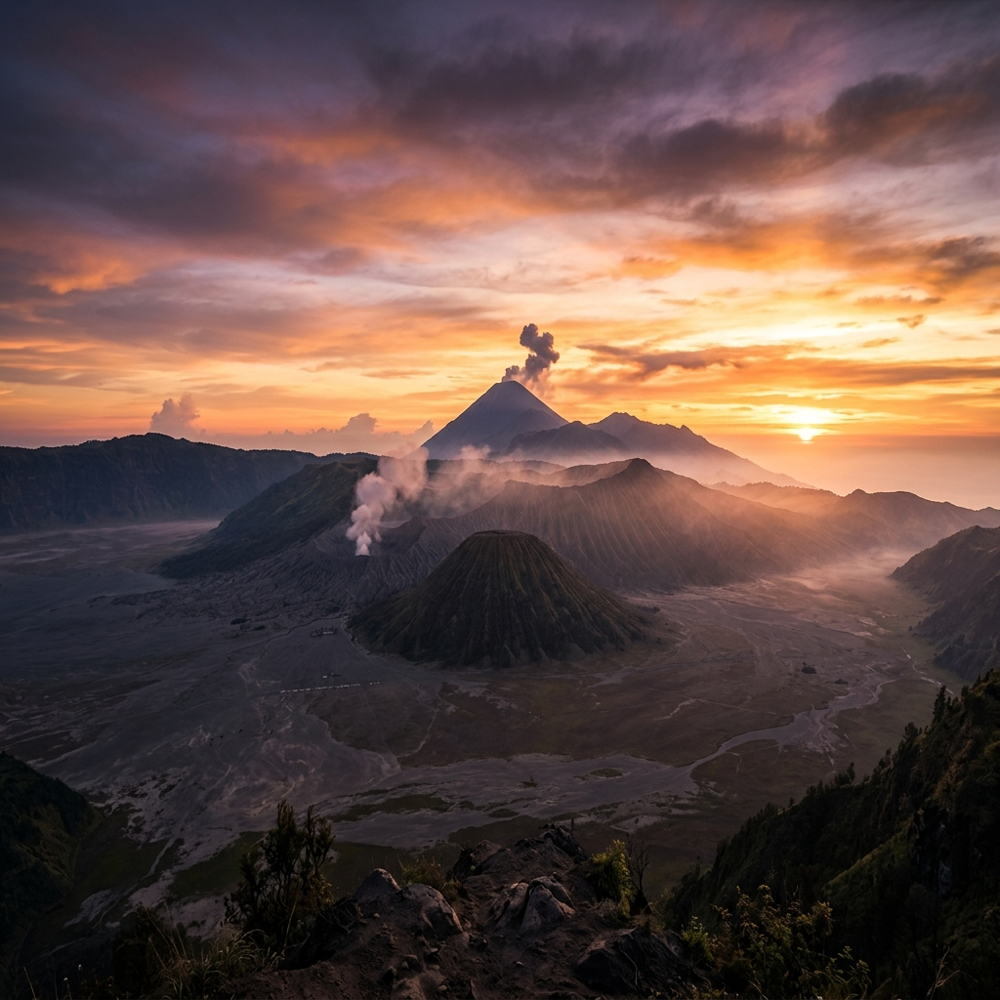

Menjelajahi dunia industri, mengabadikan setiap momen, dan mempromosikan keindahan Gunung Bromo. Dokumentasi perjalanan Kelompok 1 PTI 24B.
Kuliah Kerja Lapangan merupakan kegiatan pembelajaran di luar kampus yang menghubungkan teori perkuliahan dengan praktik nyata di dunia industri.
Mempelajari proses kerja, teknologi yang digunakan, dan mengidentifikasi kesenjangan antara pembelajaran kampus dengan dunia industri nyata.
Menganalisis metode, teknik, dan teknologi industri kemudian membandingkannya dengan teori yang dipelajari di perkuliahan.
Mengetahui bagaimana mata kuliah yang dipelajari diimplementasikan dalam dunia kerja sesungguhnya.
Menghasilkan portofolio dari seluruh tugas selama KKL sebagai bukti pencapaian pembelajaran dan kompetensi.
Menerapkan ilmu digital marketing, branding, dan content creation untuk mempromosikan destinasi wisata Gunung Bromo.
Mengidentifikasi kelebihan dan kekurangan proses pembelajaran di kampus sebagai bahan evaluasi untuk perbaikan ke depan.
10 mahasiswa PTI 24B yang bekerja sama dalam menjelajahi dunia industri dan menghasilkan luaran KKL terbaik.
Rekaman perjalanan 6 hari KKL dan video promosi destinasi wisata Gunung Bromo oleh Kelompok 1 PTI 24B.
Dokumentasi lengkap seluruh kegiatan KKL dari hari pertama hingga hari terakhir, mencakup kunjungan industri dan eksplorasi destinasi wisata.
Video promosi destinasi wisata Gunung Bromo yang menampilkan keindahan alam, budaya, dan daya tarik wisata daerah sekitar.
Seluruh dokumen dan hasil kerja Kelompok 1 selama kegiatan Kuliah Kerja Lapangan yang dapat diakses melalui tautan di bawah.
Laporan lengkap hasil KKL yang memuat analisis kunjungan industri, perbandingan teori dan praktik, serta refleksi kegiatan.
Buka Laporan →Slide presentasi hasil KKL yang digunakan untuk memaparkan temuan, analisis, dan kesimpulan kepada dosen pembimbing.
Buka Presentasi →Catatan harian kegiatan selama KKL berlangsung, lengkap dengan dokumentasi setiap aktivitas dan informasi yang diperoleh.
Buka Logbook →Kumpulan seluruh foto dan video dokumentasi kegiatan KKL yang tersimpan dalam Google Drive kelompok.
Buka Galeri →Momen-momen berharga selama perjalanan KKL, kunjungan industri, dan eksplorasi destinasi wisata Gunung Bromo.
Struktur organisasi dan pembagian tanggung jawab setiap anggota Kelompok 1 selama dan setelah kegiatan KKL.
| No | Nama | Jobdesk |
|---|---|---|
| 1 | Wemvi Afrialdo |
⭐ Ketua Kelompok Mengoordinasikan seluruh anggota, membagi tugas, memastikan timeline berjalan, menjadi penghubung dengan dosen/pembimbing, serta mengecek kelengkapan laporan sebelum dikumpulkan. |
| 2 | Ninda Sifa Riadi |
📝 Sekretaris & Logbook Mencatat hasil diskusi, membuat logbook kegiatan harian, mencatat informasi penting dari narasumber, dan membantu penyusunan laporan. |
| 3 | Naufal Yudhistira |
🎬 Koordinator Video Mengambil video selama perjalanan dan kunjungan industri, mengatur kebutuhan footage, serta memastikan semua kegiatan terdokumentasi. |
| 4 | M. Khoirul Ramadhan |
✂️ Editor Dokumentasi Mengedit video perjalanan dari awal hingga akhir KKL, menambahkan transisi, musik, subtitle, dan memastikan hasil akhir layak dipresentasikan. |
| 5 | Avisa Sahda Athaya |
📸 Fotografer Mengambil foto di setiap lokasi, mengelola arsip foto, serta memilih foto terbaik untuk laporan dan media sosial. |
| 6 | Isnaya Apriliani |
🎤 Koordinator Wawancara Menyiapkan daftar pertanyaan, aktif bertanya kepada narasumber, mencatat jawaban penting, serta membantu analisis hasil kunjungan. |
| 7 | Fatih Fairuz Naadhir |
🎞️ Editor Promosi Membuat video promosi destinasi Bromo (±1 menit), menyusun konsep promosi, melakukan editing, serta menyesuaikan target audiens. |
| 8 | Dini Artika Rahmawati |
📄 Penyusun Laporan Menyusun isi laporan KKL, menghubungkan hasil observasi dengan teori mata kuliah, serta menyusun bagian refleksi, kelebihan, dan kekurangan. |
| 9 | Novilia Azizah |
💻 Portofolio & Presentasi Mengumpulkan seluruh hasil tugas, menyusun portofolio digital, membuat slide presentasi, serta membantu presentasi hasil KKL. |
| 10 | Jauzaa Haniifah |
✅ QC & Publikasi Mengecek kembali seluruh hasil pekerjaan kelompok, memastikan tidak ada kesalahan, membantu publikasi video promosi, serta menjadi cadangan membantu anggota lain. |
Mengatur jalannya kegiatan kelompok selama kunjungan industri.
Mencatat seluruh informasi penting dari narasumber dan diskusi.
Bertanya kepada narasumber dan menggali informasi industri.
Mengambil foto dan video setiap kegiatan kunjungan.
Aktif berdiskusi, membantu dokumentasi, dan mencari informasi tambahan.
Penyusunan laporan lengkap hasil KKL dengan analisis dan refleksi.
Editing video dokumentasi perjalanan dari awal hingga akhir KKL.
Pembuatan video promosi destinasi wisata Gunung Bromo (±1 menit).
Penyusunan portofolio digital dan pembuatan slide presentasi KKL.
Pengecekan akhir seluruh hasil kerja sebelum dikumpulkan.